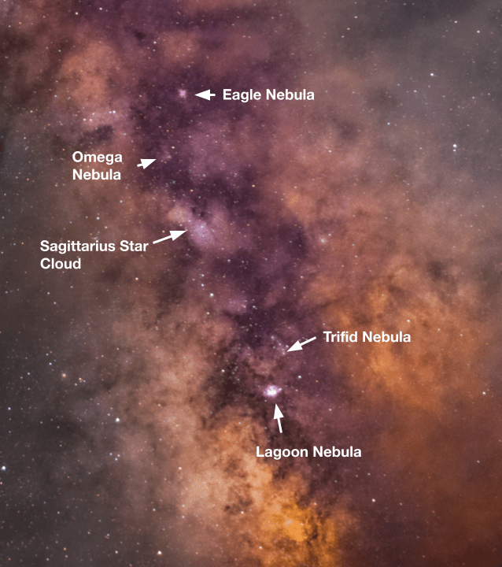

My astro rig with the Milky Way in the background. Taken with an iPhone 13 Pro.
This image was taken in Cape Cod, in a trip to a Bortle 3 zone. Because of the little light pollution, I decided to take some images of broadband targets. Among these targets was the Milky Way's galactic core. The light pollution was so weak in this area that you could see it with the naked eye. Of course, it looked nothing like the images; a camera taking a long exposure is able to collect much more light than our eyes, which means more detail and color.
To the naked eye in a dark site, the Milky Way looks like a white cloud stretching from the horizon to the zenith, with a dark center. If you let your eyes adjust to the darkness, you can start to make out more details. Things like the lagoon nebula, which can be seen as a bright pink dot on the bottom left of the Milky Way core in my image, appear as small gray fuzzy spots. I've heard that with a large enough telescope, you can begin to make out color in these objects, but I've never experienced that myself.

There a few things going on in this image. I had clouds throughout the whole imaging session, and they were present in every single one of my sub exposures. After stacking them, though, I actually quite like the cloud look.
In the Milky Way itself, you can see lanes of dark dust blocking light from the stars behind them. In areas without too much dark dust, the billions of stars in the Milky Way are visible as bright golden/yellow areas. With a sufficient focal length and aperture, you can resolve these stars individually.
Additionally, numerous nebulae are visible dotted around the dark part of the Milky Way. The brightest ones, the Lagoon, Trifid and Eagle nebulae, are visible as purple dots scattered throughout the dark lanes. Unforunately, with such a wide focal length, there isn't much detail.
- Camera: Nikon D5200 (Stock)
- Lens: Rokinon 135mm @ f/2
- Tracker: Sky Watcher Star Adventurer 2i
- Lights: 7x30s
- Flats: 50
- Bias: 50
Stacked in Deep Sky Stacker.
Pixinsight
- Photometric Color Calibration on the stacked image.
- Starnet 2 with Linear and Create Starmask boxes checked.
- On starless image:
- Dark Structure Enhance at 40% power to increase contrast and make dark nebulosity pop more
- NoiseXTerminator at 75% power with 25% detail
- Deconvulate on default settings with 5 iterations to sharpen smaller details
- Apply ScreenTransferFunction autostretch on image
- Slightly increase black point using HistogramTransformation
- Export to Photoshop as TIFF
- On stars image:
- Stretch with HistogramTransformation until they were to my liking. Stretching them too much would overpower faint details in the galaxy, so I was conservative with the stretching.
- SaturationTransformation at 0.5
Photoshop
- Mask galaxy to slightly brighten it and slightly darken background
- Reduce saturation and vibrance on background by about 30%
- Color balance on the galaxy to slightly push it towards the reds/purples
- Camera Raw Filter:
- Exposure: +30%
- Contrast: +50%
- Shadows: -100%
- Whites: +10%
- Highlights: +15%
- Clarity: +50%
- Dehaze: +15%
- Add signature
- Export to Pixinsight as TIFF
Back in Pixinsight
- PixelMath to combine stars and starless images. I used this guide to do this.
- Export as PNG